Next: Two-Port Networks Up: Chapter 2: Circuit Principles Previous: Solving Circuits with Kirchoff
A generic system with input (stimulus, cause)  and output (response,
effect)
and output (response,
effect)  can be described mathematically as a function .
The function is linear if it satisfies the following:
can be described mathematically as a function .
The function is linear if it satisfies the following:
| (19) |
| (20) |
| (21) |
 and
and  ) individually and then combine the individual responses (
and ). An electrical system of linear components (with linear
voltage-current relation) is a linear system (if only voltage and current
are of interest). When the circuit is linear, the following applies:
) individually and then combine the individual responses (
and ). An electrical system of linear components (with linear
voltage-current relation) is a linear system (if only voltage and current
are of interest). When the circuit is linear, the following applies:
Superposition Principle:
When there exist multiple energy sources in the circuit, any voltage and current in the circuit can be found as the algebraic sum of the corresponding values obtained by assuming only one source at a time, with all other sources turned off:
As superposition principle only applies to linear functions, it cannot be applied to nonlinear functions such as power (e.g., or ).
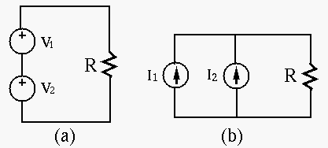
| (22) |
 short-circuit) and (
short-circuit) and ( short-circuit).
short-circuit).
 |
(23) |
 open circuit) and (
open circuit) and ( open circuit).
open circuit).
However, note that superposition principle does not apply to any variable nonlinearly related to the energy sources, such as power:
| (24) |
Example 1: The previous example can also be solved by superposition theorem.
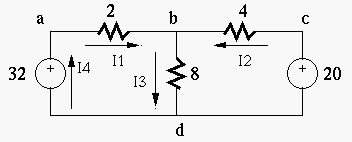
First, we turn the voltage source of 20V off (short-circuit with 0V), and get
| (25) |
| (26) |
 |
(27) |
Thevenin's theorem and Norton's theorem
In principle, all currents and voltages of an arbitrary network of linear components and voltage/current sources can be found by either the loop current method or the node voltage method, as we have seen previously.
However, if only the current  and voltage
and voltage  associated with one
particular component such as a resistor
associated with one
particular component such as a resistor  are of interest, it is
unnecessary to find voltages and currents elsewhere in the circuit.
Instead, we can “pull” the component out and treat it as the load
are of interest, it is
unnecessary to find voltages and currents elsewhere in the circuit.
Instead, we can “pull” the component out and treat it as the load
 of the rest of the circuit, which can be modeled as either a
Thevenin voltage source (Leon Charles Thevenin), a non-ideal
voltage source
, or a Norton current source
(Edward Lawry Norton)
a non-ideal
current source
. We can then find the and
associated with the resistor .
of the rest of the circuit, which can be modeled as either a
Thevenin voltage source (Leon Charles Thevenin), a non-ideal
voltage source
, or a Norton current source
(Edward Lawry Norton)
a non-ideal
current source
. We can then find the and
associated with the resistor .
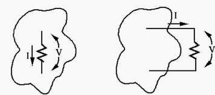
Any one-port (two-terminal) network of resistance elements and energy
sources is equivalent to (can be modeled by) an ideal voltage source
 in series with a resistor
in series with a resistor  , where
, where
is the equivalent resistance when all energy sources are
turned off (short-circuit for voltage sources, open-circuit for current
sources).
Proof:
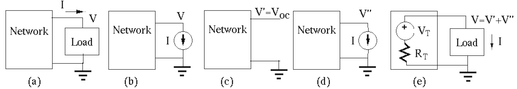
at
the output port of the network are and , respectively.
in circuit (a) by an ideal current source
while keeping voltage the same (b), all voltages and
currents in the network to be modeled are not affected.
in terms of the internal energy sources inside
the network and the external current source by superposition principle:
and current in the circuit in (e) are also
related by the same equation
, i.e., this circuit
is equivalent to the original circuit in (a), and can therefore be
used as a model of the circuit.
We see that as far as the port voltage and current associated
with the load are concerned, the one-port network is equivalent to an
ideal voltage source
, the open-circuit voltage across the
port, in series with an internal resistance , which can be
obtained as the ratio of the open-circuit voltage and the short-circuit
current.
Any one-port (two-terminal) network of resistance elements and energy sources is equivalent to (can be modeled by) an ideal current source in parallel with a resistor , where
Proof: The proof of this theorem is in parallel with the proof of Thevenin's theorem.
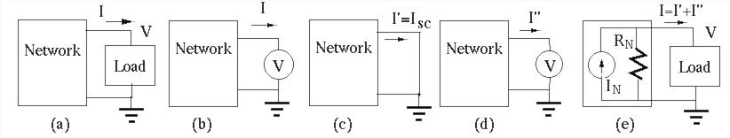
at
the output port of the network are and , respectively.
in circuit (a) by an ideal voltage source
while keeping current the same (b), all voltages and currents
in the network to be modeled are not affected.
in terms of the internal energy sources inside
the network and the external voltage source by superposition principle:
and voltage in the circuit in (e) are also
related by the same equation
, i.e., this circuit
is equivalent to the original circuit in (a), and can therefore be
used as a model of the circuit.
We see that as far as the port voltage and current associated
with the load are concerned, the one-port network is equivalent to an
ideal current source
, the short-circuit current through the
port, in parallel with an internal resistance , which can be
obtained as the ratio of the open-circuit voltage and the short-circuit
current.
Moreover, we note that Thevenin's theorem and Norton's theorem are
equivalent, as one can always be converted into the other. The internal
resistances in both theorems are the same , and the voltage
source
in series with in Thevenin's theorem can be
converted to a current source
in parallel
with in Norton's theorem. In either case, we can find the
internal resistance by
| (28) |
The voltage across a set of parallel branches of voltage source
 in series with
in series with  (
(
 ) is
) is
| (29) |
Proof: (Homework)
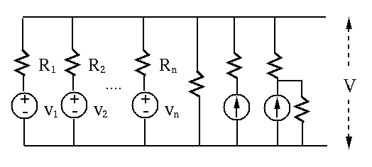
This theorem can be augmented to include branches containing but no
voltage source (), and branches containing a current source  . If
a resistance is in series with , it can be neglected (as it does
not affect the current). If a resistance is in parallel with ,
they can be converted into a voltage source
in series with .
. If
a resistance is in series with , it can be neglected (as it does
not affect the current). If a resistance is in parallel with ,
they can be converted into a voltage source
in series with .
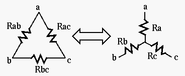
The configuration can be converted to and vice versa. We relate the and by realizing that the resistance between terminals a and b of should be equal to that between the same two terminals of :
| (30) |
Given , and of a , the three equations above can be solved for , and of the corresponding . For example, subtracting the 3rd equation from the sum of the first two, we get expression for . The solutions are:
| (31) |
Reversely, given , and of a , the same three equations above can also be solved for , and of the corresponding to get:
| (32) |
The top circuit (a bridged T-network) in the following figure can be converted into either of the two equivalent circuits below.

 , , and
, , and  can be converted
to a Y, which can then be combined with to get a Y (bottom left):
can be converted
to a Y, which can then be combined with to get a Y (bottom left):
| (33) |
,  , and can be converted to a
, which can then be combined with to get a
(bottom right):
, and can be converted to a
, which can then be combined with to get a
(bottom right):
| (34) |
Example 1: Model the circuit in part (a) by Thevenin's theorem (b) and Norton's theorem (c).
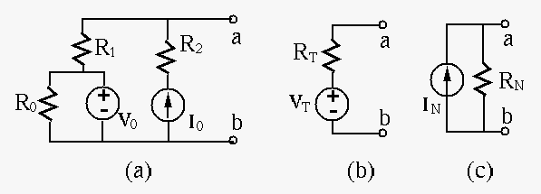
Find equivalent internal resistance when both energy sources are turned off: .
Find open-circuit voltage:
Find short-circuit current (superposition):
| (35) |
 do not appear in either of
the two equivalent circuits, because a voltage source provides a constant
voltage
do not appear in either of
the two equivalent circuits, because a voltage source provides a constant
voltage  independent of any resistance in parallel, and a current
source drives a constant current , independent of any resistance
in series.
independent of any resistance in parallel, and a current
source drives a constant current , independent of any resistance
in series.
Example 2: Find voltage across and current through .
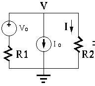
Any one of the following methods can be used to solve the circuit:
Apply KVL around the outer loop with loop current to get
| (36) |
| (37) |
Assume the currents (left branch), and (right branch)
all leave the top node, where the voltage is (with respect to the
bottom treated as ground). By KCL, we have
| i.e., | (38) |
, we get:
| (39) |
| (40) |
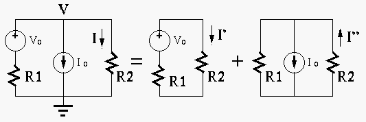
 |
(41) |
| (42) |
| (43) |
| (44) |
and  in the left branch as a non-ideal
voltage source into a current source
(upward);
and ;
(current devider):
in the left branch as a non-ideal
voltage source into a current source
(upward);
and ;
(current devider):
| (45) |
:
| (46) |
| (47) |
| (48) |
| (49) |
Example 3: In the circuit below, ,
,
 ,
. Find the value of current when
. Then re-solve the problem when
,
. Find the value of current when
. Then re-solve the problem when  takes different
values of and . Moreover, find the value of
so that
takes different
values of and . Moreover, find the value of
so that  as desired.
as desired.
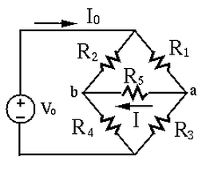
Consider three independent loops with clockwise loop currents:
, , )
in the top loop (,, )
in the bottom loop ( , , )
, , )
| (50) |
| (51) |
| (52) |
is
| or | (53) |
to find
the current through it.
Assume the bottom node is ground with 0 volt, then the voltage at the top node is known to be . Now we apply KCL to nodes a and b to get two equations:
| (54) |
| (55) |
| (56) |
is
| (57) |
to find
the current through it.
To find for the current through it to be , we
replace the current
through in the two
equations above by the desired :
| (58) |
| (59) |
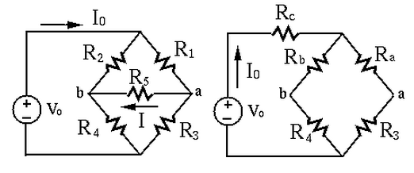
To find through
, we first convert the
composed of , and into a composed of ,
and :
| (60) |
| (61) |
| (62) |
and (current divider):
| (63) |
| (64) |
 and
and  (assuming the bottom node
is ground):
(assuming the bottom node
is ground):
| (65) |
through
:
| (66) |
For any of the methods above, the problem needs to be resolved
for
and
, and it is hard to find a
value of given the require current .
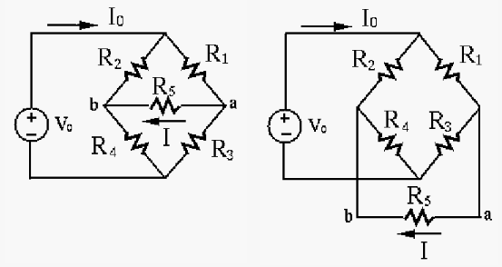
Solve the problem using Thevenin's theorem by the following steps:
in series with an internal resistance .
Specifically, we remove as the load of a network composed of all other
resistors , , , and the voltage source , then
apply Thevenin's theorem to find the open-circuit voltage between the two
terminals a and b:
| (67) |
short-circuit):
| (68) |
of different values can be found by
| (69) |
Example 4: The circuit below, often used in some control system, is composed of two voltages, two potentiometers, and a load resistor. Assume:
| (70) |
 through the load resistor
.
through the load resistor
.
We denote the current through by , and the voltage at the left
and right ends of by and  , respectively, with respect to
the bottom wire treated as the ground.
, respectively, with respect to
the bottom wire treated as the ground.
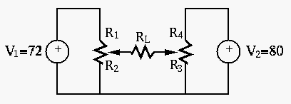
Superposition theorem
Find caused by voltage , and then caused by voltage
, then get
 .
.
. Assume , so that currents through
and are and , respectively
(current divider), and
.
is
 .
.
. Assume , so that currents through
and are, respectively, and
(current divider), and
.
| (71) |
Thevenin's theorem
Remove , find open-circuit voltage
and equivalent
resistance , then find
.
| (72) |
Example 5: In the circuit below,
,
,
,
,
, . Given the current
(downward) through is , find the resistance of .
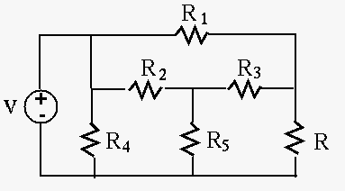
Note voltage method:
Let the voltages at the middle node be and at the top-right node
be . Then based on node-voltage method, we get
| (73) |
Thevenin's theorem: (Homework)
Example 6: (Homework)
In the circuit below,
,
,
, ,
, and . Find the Thevenin model of this circuit in terms
of and .
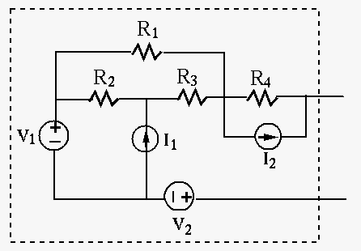